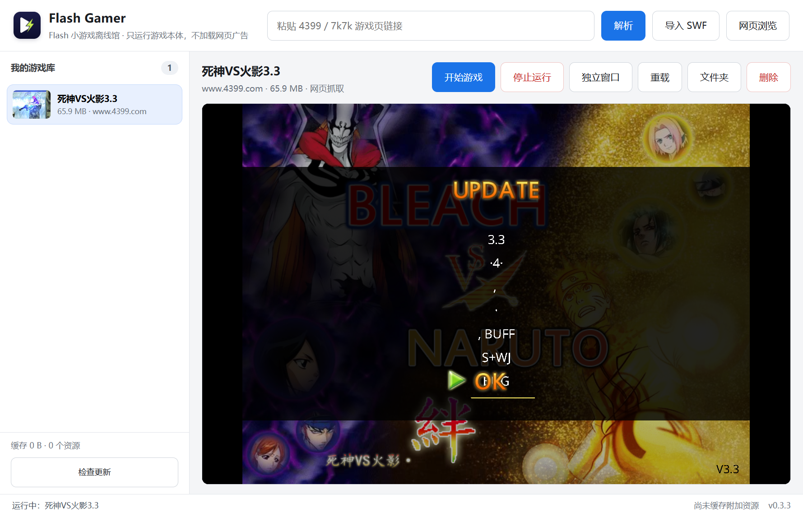
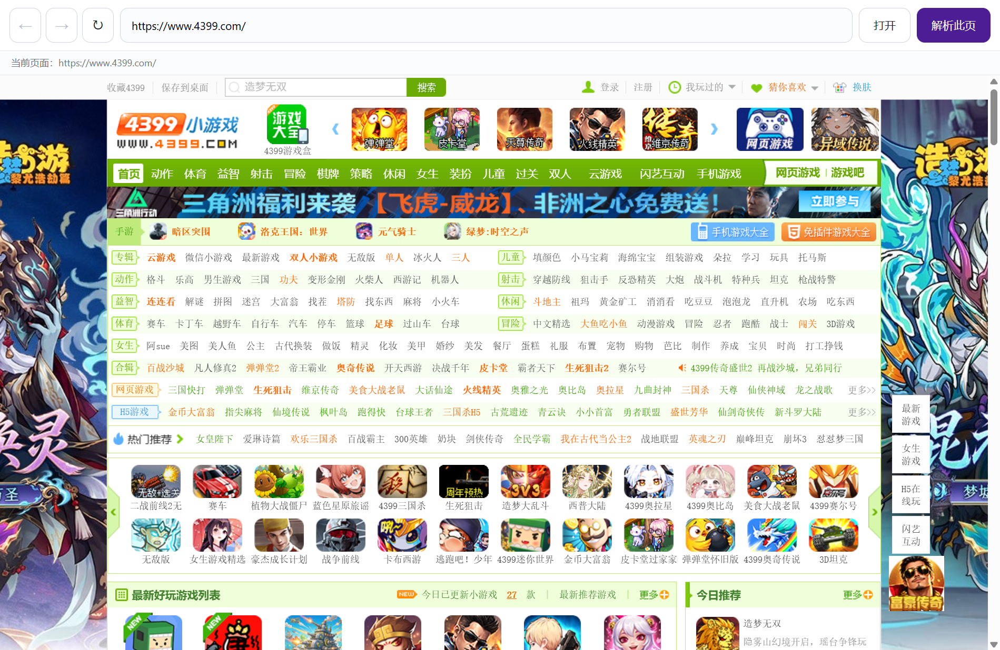
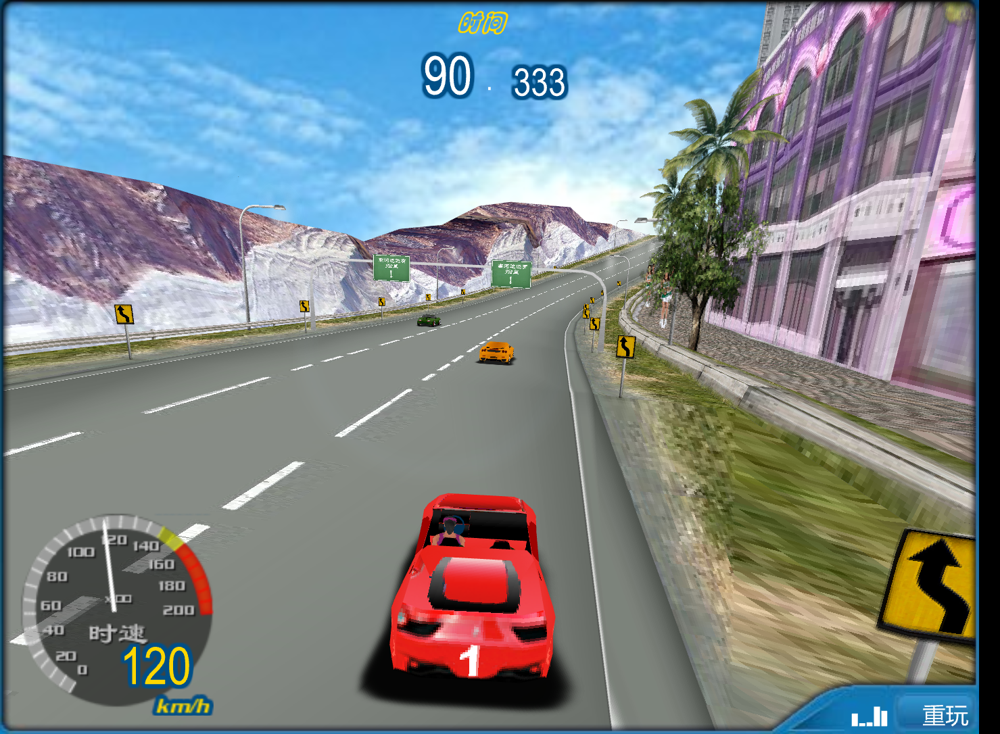

粘贴链接就能解析
支持 4399 与 7k7k 游戏页。页面里有多个 SWF 时会列出候选，自动跳过广告占位壳，优先选择游戏本体。
把 4399 / 7k7k 的游戏页地址粘进来，自动取出游戏本体，存到本机。之后断网也能打开，不装 Adobe Flash，也不会弹出游戏网页里的广告。

只做三件事：取出游戏本体、存在本地、稳定地跑起来。
支持 4399 与 7k7k 游戏页。页面里有多个 SWF 时会列出候选，自动跳过广告占位壳，优先选择游戏本体。
游戏文件保存在本机。之后启动程序、点开游戏即可，不再依赖 4399 的服务器，也不再需要网络。
用 Rust 写的 Ruffle 播放器运行 SWF。播放阶段只加载游戏本体，页面上的弹窗、悬浮广告和统计脚本都不会执行。
游戏可以单独开一个窗口，主窗口继续浏览、解析别的游戏都不打断，游戏窗口不会被后台节流。点「停止运行」可一次关闭主窗口播放器和所有独立窗口。
同一个 SWF 按 SHA-256 只保存一份。重复解析、重复导入都不会让游戏库越堆越大。
解析失败会保留页面预览与候选信息。可以换一个入口，或在页面里先点“开始游戏”，再点“解析此页”。

内置网页浏览窗口，可以像普通浏览器一样打开 4399、登录账号，再点“解析此页”。登录状态保存在本机，解析和游戏请求会自动带上 Cookie。
网页浏览会打开 4399 原页面，页面自身的广告由 4399 决定；只有游戏播放器不加载网页。
在浏览器里打开 4399 / 7k7k 的游戏页，复制地址栏里的链接。
把链接粘到 Flash Gamer 顶部的输入框，点“解析”，等待抓取完成。
游戏自动入库并开始播放；之后在左侧游戏库里随时点开，断网也能运行。

已经有游戏文件的，用“导入 SWF”或直接拖进窗口即可。游戏页失效了也不影响已经入库的游戏，文件始终在本机。
“独立窗口”会把当前游戏开在单独的窗口里，主窗口继续解析、浏览都不会打断它。
不会。播放器是 Ruffle，用 Rust 编译成 WebAssembly 运行，不需要 Adobe Flash Player，也不会修改浏览器插件。
安装包没有购买代码签名证书，Windows SmartScreen 会给出提示。可以点“更多信息 → 仍要运行”，或用下载页给出的 SHA-256 校验文件完整性。源码与构建脚本都在 GitHub 上。
安装版存在 %APPDATA%\Flash Gamer\FlashGamerData，卸载程序不会删除这个目录。免安装版存在程序旁边的 FlashGamerData，删掉整个文件夹即可清空。游戏库本身就是 SWF 文件，可以直接拷走。
解析游戏和补齐资源时需要联网。抓取完成后，游戏本体与缓存已经在本地，断网后仍可启动并正常游玩；依赖在线登录或联网对战的游戏除外。
4399 会在页面里放广告占位 SWF。程序会跳过常见的 cell.swf 广告壳并优先选择体积最大的游戏本体；如果页面里确实有多个候选，会列出列表让你选择。
Ruffle 兼容大多数 Flash 8 / AS2 游戏；依赖冷门 AS3 特性、3D 加速或联网服务的游戏可能无法运行。这是 Ruffle 的兼容范围，不是解析失败。
软件启动后会自动检查新版本，也可以点主界面左下角的「检查更新」。发现更新后会下载安装包并核对 SHA-256，校验通过后再打开安装程序。更新只替换程序文件，本地游戏库不受影响。
不会。程序没有遥测与上报，解析、缓存和播放都在本机完成。登录 Cookie 只保存在本机，用于在解析游戏时带上登录态。
Windows 10 / 11 64 位。两者功能相同，区别只在安装方式与数据位置。
像普通软件一样安装：可以选择安装目录，自动创建桌面与开始菜单快捷方式，之后从开始菜单启动。
解压到任意文件夹，双击 Flash Gamer.exe 就能用。游戏库放在程序旁边，适合放 U 盘或随时删干净。
下载后可对照以下值确认文件完整。PowerShell：Get-FileHash .\FlashGamer-0.3.3-setup.exe -Algorithm SHA256
53e3a3a2067f30a278b847b46d422af28b423192c11cdad3f67c645093418f78
8650076243b2e1fde22547a05188d08589f04cf31ba77be486c963a043c88ffb
安装版与免安装版都带软件内更新：启动后自动检查，也可以点主界面左下角的「检查更新」。
Flash Gamer 只提供播放工具，不包含任何游戏文件。游戏版权归原作者与平台所有，请仅用于个人离线游玩。